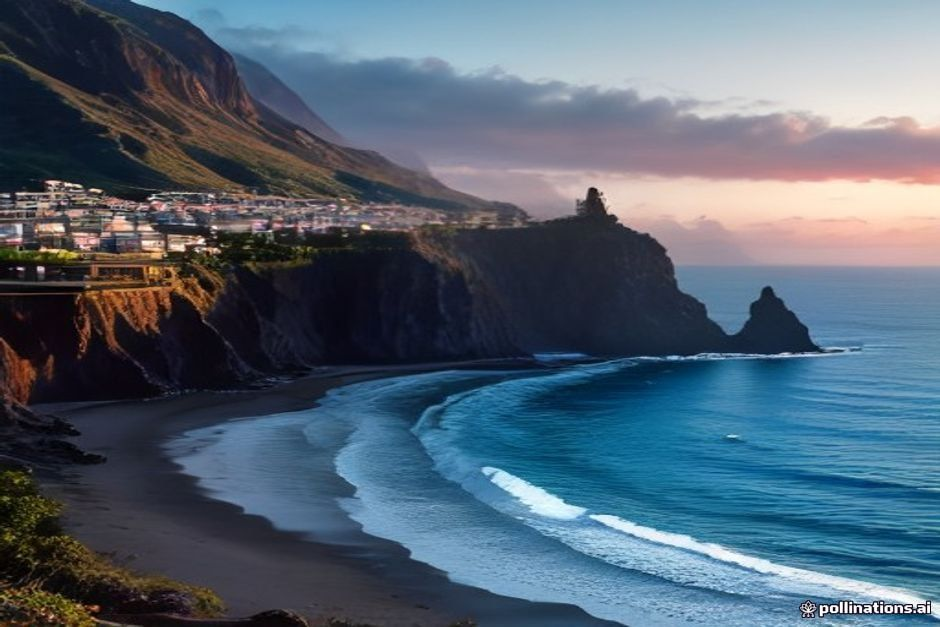
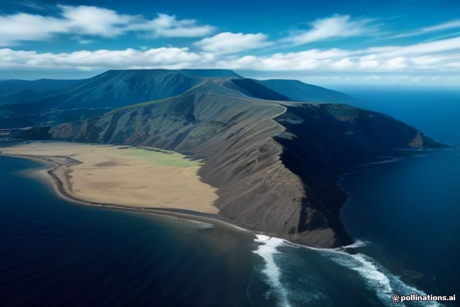

Si viene de Canarias, o de cualquier playa de arena clara de la península, y busca una playa de arena negra en Madeira, conviene que sepa algo antes de hacer la maleta: aquí hay una sola de forma natural, y es pequeña. El resto de la costa es piedra volcánica de color oscuro: acantilados, callaos y plataformas de roca. Y tiene una explicación sencilla, porque la isla entera es esa piedra.
Una sola playa de arena negra natural: Prainha
Se llama Prainha y está junto a Caniçal, en el extremo oriental de la isla, al lado de la reserva natural de Ponta de São Lourenço. Es el único punto de la isla principal donde el mar ha triturado la roca volcánica hasta formar una playa de arena de verdad.
No espere una playa kilométrica. Son unos 80 metros de arena entre cobriza y negra, con acantilados áridos de tono ocre detrás. Si ha visto la Madeira verde y frondosa del interior, el contraste le sorprenderá: esta esquina es más seca y más austera, con menos lluvia, roca más antigua a la vista y una costa trabajada tanto por el viento como por el agua.

¿Es Madeira una isla volcánica? Del todo
Madeira es la cima de un enorme volcán en escudo, levantado por actividad de punto caliente en pleno Atlántico. Las erupciones submarinas empezaron hace decenas de millones de años, y la primera tierra asomó sobre el agua hace entre 5 y 7 millones de años. Después, colada sobre colada, sobre todo de basaltos alcalinos, la isla fue tomando la forma que tiene hoy.
Se cree que la última actividad volcánica en la isla principal fue hace solo unos miles de años. En términos geológicos, es una isla joven: escarpada, empinada y todavía sin suavizar. De ahí que sus acantilados, su cala negra y su costa rocosa no sean sedimento llegado de un continente, sino la misma roca basáltica en distintos puntos de su desgaste.
Por qué la arena es tan escasa
Aquí está la diferencia con las islas de arena negra a las que quizá esté acostumbrado. En una costa continental, un fondo somero de cuarzo claro se va moliendo mar adentro y la arena llega a la orilla. En Madeira no hay nada de eso: solo basalto oscuro, denso y lento de erosionar, que cuando se rompe da granos negros o marrón oscuro.
A eso se suma el tiempo y la pendiente. La isla es joven y su orilla cae abrupta en lugar de descender con suavidad, así que hay poco material y poco margen para que la arena se acumule. La mayoría de los pueblos de la costa se asientan sobre callaos, rocas o piedra volcánica desnuda.
Si no hay arena, ¿dónde se baña uno?
En las piscinas naturales. Donde una colada de lava llegó al mar, se enfrió y formó una plataforma o una oquedad, el océano la rellena y queda un baño resguardado. Es la misma historia que en Prainha, con otro final: allí la roca se deshizo en arena; en Porto Moniz y Seixal, en la costa norte, se endureció lo bastante como para conservar su forma.
Por eso gran parte del baño en Madeira no es tumbarse en una arena sino meterse en una piscina de roca volcánica que el Atlántico renueva a través de los huecos de la piedra. Es otra manera de hacer playa, y a mucha gente acaba gustándole más.
La arena dorada de Calheta y Machico viene de Marruecos
Si ha visto fotos de playas doradas en Madeira, no son un error: son artificiales. Calheta abrió en 2004 como la primera playa de la isla hecha con arena importada. Se construyó tras espigones y se rellenó con arena dorada traída de Marruecos. La playa de Machico siguió la misma fórmula poco después, más pequeña, con espigones que retienen la arena frente al oleaje atlántico.
Ambas son agradables, de pendiente suave y cómodas para ir con niños. Pero ninguna es natural: son soluciones de ingeniería para el mismo problema del basalto, y algunos complejos más pequeños han copiado la idea.
Cómo elegir según lo que busque
- Arena negra auténtica: Prainha, junto a Caniçal. Pequeña, con un paisaje seco y poco habitual en la isla.
- Arena dorada y fácil con niños: Calheta o Machico, sabiendo que la arena es importada.
- Baño entre roca volcánica: las piscinas naturales de Porto Moniz y Seixal.
- Baño en una cala volcánica desde el mar: Fajã dos Padres, a la que solo se llega bien por mar o en teleférico.
La costa volcánica se entiende mejor desde el agua
En la mayoría de los puntos, sí. La pared de basalto en capas de Cabo Girão, uno de los acantilados costeros más altos de Europa, solo muestra su verdadera escala desde abajo. Y la misma roca oscura que en casi toda la costa sur no consigue formar playa se abre en calas resguardadas en las que se puede nadar.
Ese es justo el tramo que recorre una excursión de día con Chifbay: sale de la Marina do Funchal, pantalán C, pasa por Câmara de Lobos y Cabo Girão y llega a Fajã dos Padres, con baño y tablas de paddle. El barco es para su grupo solo, hasta 5 personas, con dos patrones locales con licencia. Son 2 h 30 hasta Ribeira Brava por 500 EUR, o 3 h hasta Ponta do Sol por 600 EUR, salida a las 10:00 o a las 14:00. El precio es por el barco entero, no por persona, y la cancelación es gratuita hasta 24 horas antes.
Si prefiere algo más corto y sin baño, el paseo al atardecer sale 1 h 15 antes de la puesta de sol, todo el año, y llega hasta Cabo Girão en 2 h por 400 EUR. Cualquier salida incluye comida y bebida a bordo, un vídeo 360° con Insta360, imágenes de dron si el tiempo lo permite y fotos hechas con cámara de verdad. Puede ver todas las opciones en experiencias o consultar los detalles en la información práctica.

Cada acantilado, cala y piscina de esta costa es la misma roca, solo que interrumpida en un punto distinto de su lento desmoronarse hacia el Atlántico.
Saber por qué la arena es así cambia la forma de mirar el resto de la costa. La cala negra de Prainha, el oro importado de Calheta, las piscinas de Porto Moniz y los acantilados que hay entre unas y otras son una sola historia, no cuatro. Desde el agua, esa historia es el paisaje durante todo el trayecto.